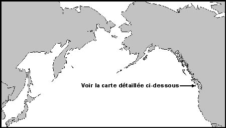
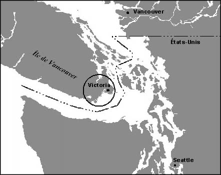

Emplacement
La Cale sèche d'Esquimalt est située à Esquimalt, au 825 Admirals Road – à 15 minutes au nord de Victoria, à l'extrémité sud de l'île de Vancouver.
Victoria est située à proximité des villes portuaires de Vancouver (Colombie-Britannique) et de Seattle (Washington), et à environ 1 200 km (600 milles) de San Francisco.
Ce port « toutes saisons » procure un accès stratégique à l'Alaska et aux pays riverains du Pacifique.
Cartes


- Date de modification :